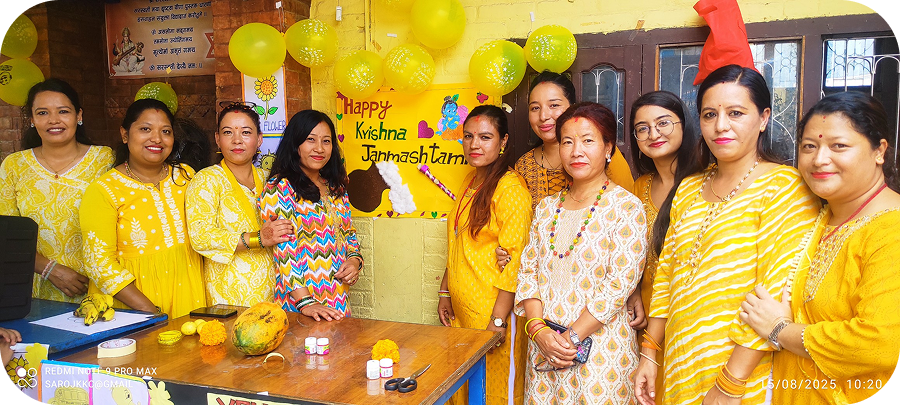
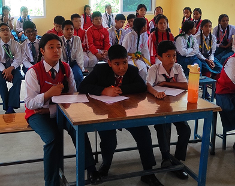
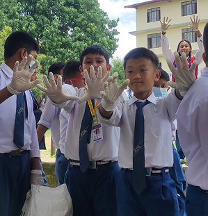
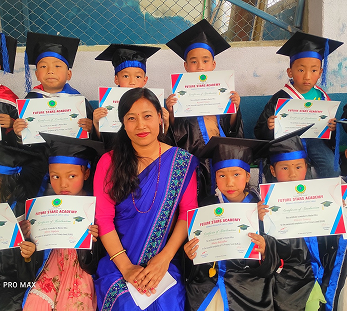
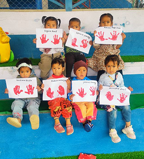

We are delighted to have you visit our school’s online home. At Future Stars Academy,
we believe that education goes beyond textbooks—it is about nurturing curiosity, building
character, and inspiring lifelong learning. For over 2001, we have been committed to
providing a safe, inclusive, and supportive environment where every student can discover
their potential and grow with confidence.Together with our dedicated teachers, supportive parents,
and vibrant community, we strive to prepare our students not only for academic success but also for
life as responsible, compassionate, and innovative citizens of tomorrow.
At Future Stars, we believe that festivals are a reflection of our rich cultural
heritage and an opportunity to instill values of unity, respect, and joy among students.
Throughout the year, our school celebrates a variety of festivals such as Dashain, Tihar, Holi,
Christmas, and many more, bringing together students from different backgrounds in a spirit
of harmony. These celebrations include cultural programs, art and craft activities, music, dance,
and sharing of traditional foods. By observing festivals together, we teach our students to
appreciate diversity, strengthen social bonds, and create cherished memories that enrich their
learning experience.





Our school organizes quiz competitions to encourage curiosity, critical thinking, and
teamwork among students.
We celebrate Environment Day by tree planting, with students participation to promote a greener
and healthier future. 🌱
Our Kindergarten Graduation celebrates the young learners’ marking their joyful transition from early
childhood education 🎓✨
Our junior student engage in fun and educational extra activities like arts, them explore talents.